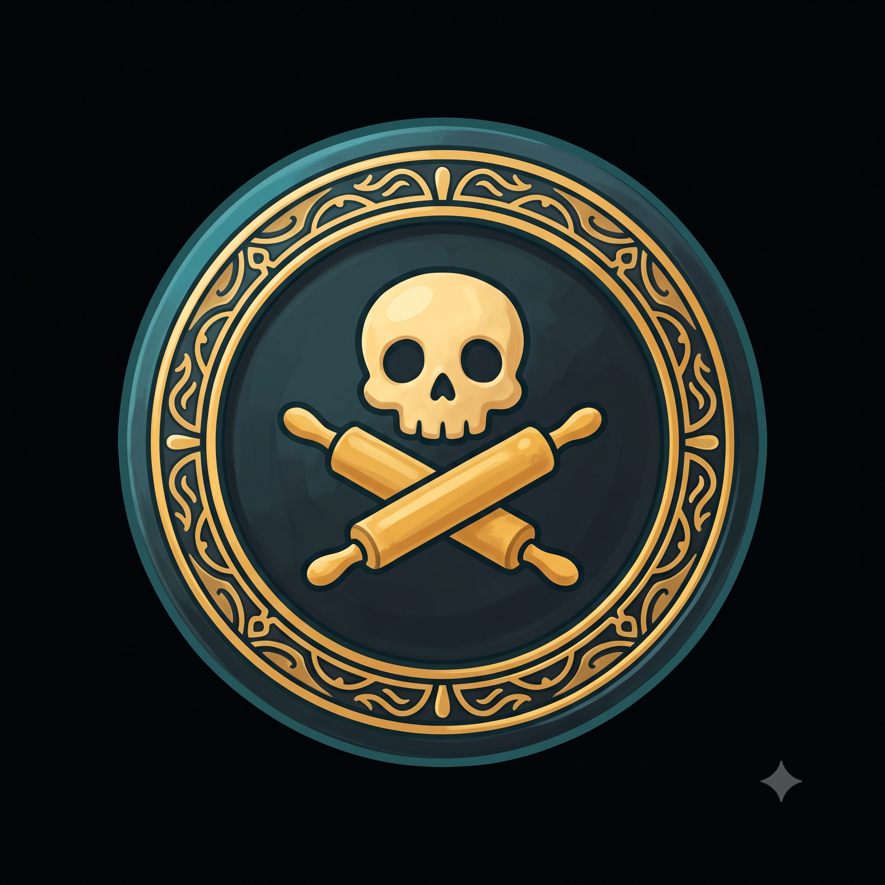
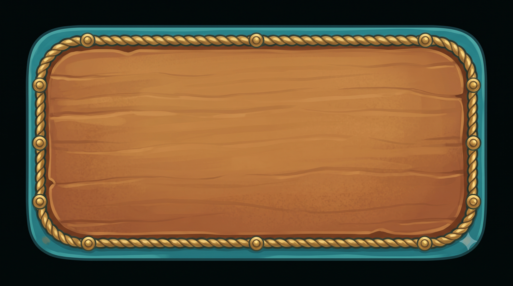
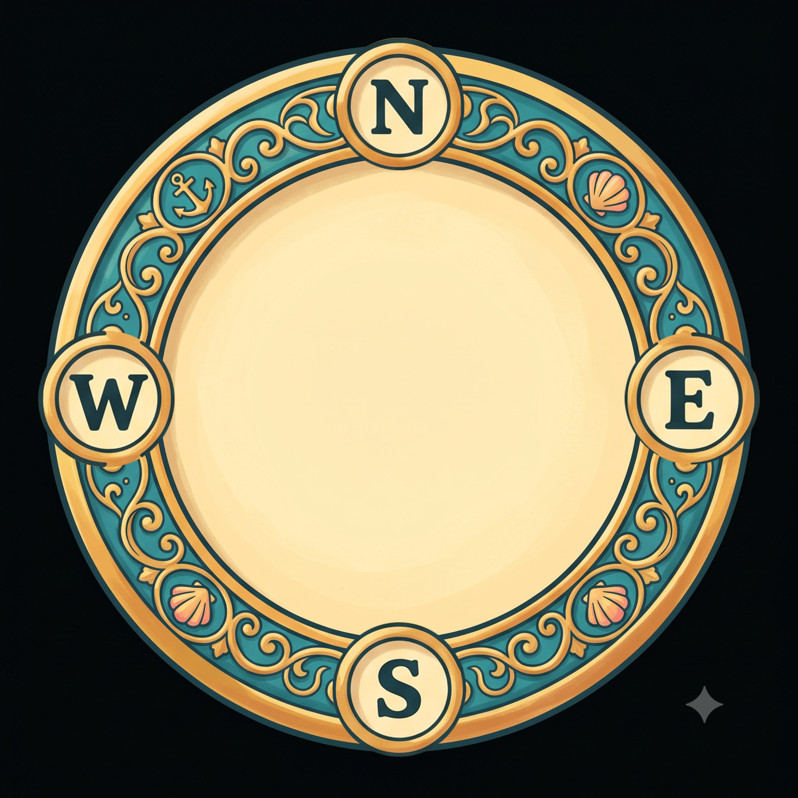
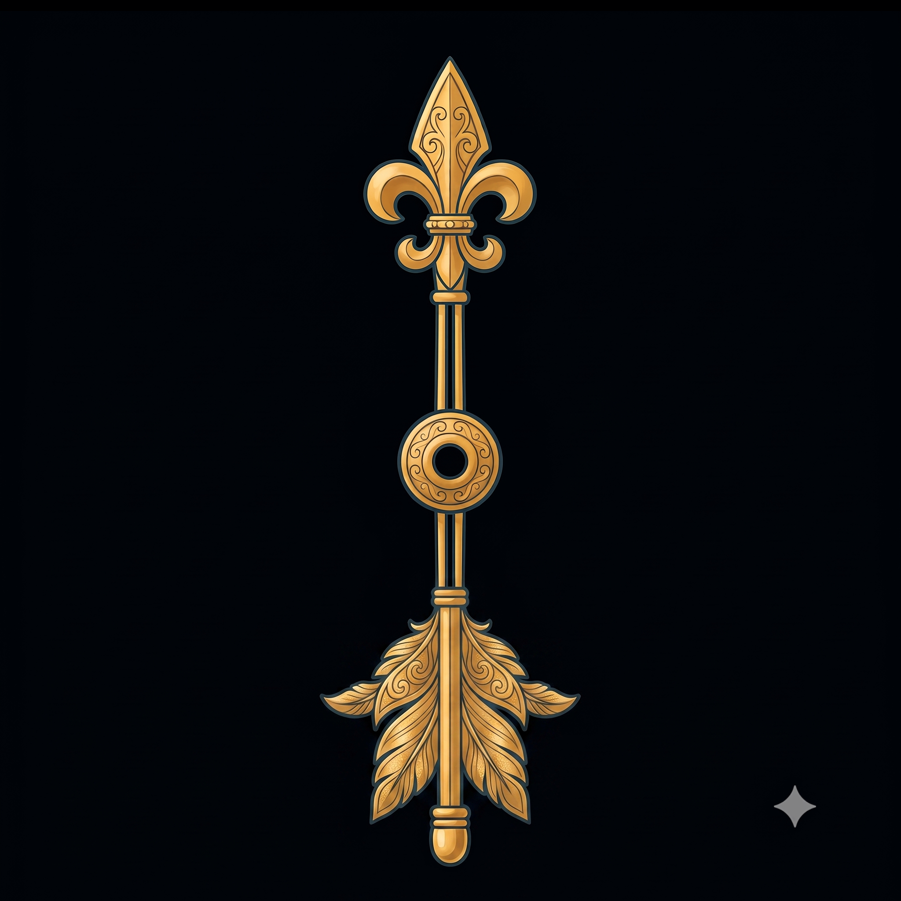

Flippenator Coin — Heads (cupcake)
Prompt used
Hand-illustrated storybook game art, warm and playful pirate-nautical theme. Soft rounded shapes, gentle dark-teal outlines, hand-painted texture, cheerful saturated palette (sea teal #1d96a6, warm parchment #fff6c0, gold #f5a623, coral pink #f2679e, mint #27c78d, deep ink #1f4249). Friendly, kid-appropriate, slightly chunky proportions like a mobile board game. Even soft lighting from top-left, subtle painterly shading, no harsh photorealism. Centered subject, on a solid flat near-black background (hex #000001, no gradient, no shadow, no vignette), no text or lettering anywhere in the image. A large round pirate gold doubloon coin, top-down view, with a simple embossed emblem of a cute cupcake in the center of the face, ornate engraved rim detailing, glossy metallic gold, 1:1 square, centered, on a solid flat near-black (#000001) background, no lettering, no numbers, no text anywhere.

Flippenator Coin — Tails (skull)
Prompt used
Hand-illustrated storybook game art, warm and playful pirate-nautical theme. Soft rounded shapes, gentle dark-teal outlines, hand-painted texture, cheerful saturated palette (sea teal #1d96a6, warm parchment #fff6c0, gold #f5a623, coral pink #f2679e, mint #27c78d, deep ink #1f4249). Friendly, kid-appropriate, slightly chunky proportions like a mobile board game. Even soft lighting from top-left, subtle painterly shading, no harsh photorealism. Centered subject, on a solid flat near-black background (hex #000001, no gradient, no shadow, no vignette), no text or lettering anywhere in the image. A large round pirate coin, top-down view, made of BLACK metal (glossy black obsidian/dark metal coin, not gold), with a simple embossed emblem of a friendly cartoon skull with two rolling pins crossed behind it (like crossed bones) in the center of the face, the emblem and rim detailing picked out in gold so it reads clearly against the black coin, ornate engraved rim, 1:1 square, centered, on a solid flat near-black (#000001) background, no lettering, no numbers, no text anywhere.

Turn Clock
Prompt used
Hand-illustrated storybook game art, warm and playful pirate-nautical theme. Soft rounded shapes, gentle dark-teal outlines, hand-painted texture, cheerful saturated palette (sea teal #1d96a6, warm parchment #fff6c0, gold #f5a623, coral pink #f2679e, mint #27c78d, deep ink #1f4249). Friendly, kid-appropriate, slightly chunky proportions like a mobile board game. Even soft lighting from top-left, subtle painterly shading, no harsh photorealism. Centered subject, on a solid flat near-black background (hex #000001, no gradient, no shadow, no vignette), no text or lettering anywhere in the image. A wide horizontal rounded-rectangle UI panel background for a game timer widget, WIDESCREEN LANDSCAPE ORIENTATION, aspect ratio 16:9 (much wider than tall, like a small horizontal card), the panel fills the entire frame edge to edge with no border margin around it. Warm brown wood-grain / leather plaque texture with a gentle gradient, framed by an ornate brass rope-and-rivet border along the rounded edges. The panel surface is otherwise completely plain and uncluttered with NO circle, NO grommet, NO badge, NO icon anywhere on it, just the plain textured panel and its border, so text can be overlaid on top of it later. On a solid flat near-black (#000001) background behind the panel, no gradient, no shadow. No text, no numbers, no lettering anywhere in the image.

Compass Rose Dial
Prompt used
Hand-illustrated storybook game art, warm and playful pirate-nautical theme. Soft rounded shapes, gentle dark-teal outlines, hand-painted texture, cheerful saturated palette (sea teal #1d96a6, warm parchment #fff6c0, gold #f5a623, coral pink #f2679e, mint #27c78d, deep ink #1f4249). Friendly, kid-appropriate, slightly chunky proportions like a mobile board game. Even soft lighting from top-left, subtle painterly shading, no harsh photorealism. Centered subject, on a solid flat near-black background (hex #000001, no gradient, no shadow, no vignette), no text or lettering anywhere in the image. An elegant ornate round nautical compass FACE, top-down view, warm gold and teal coloring, with a richly decorated engraved outer rim (filigree, small nautical motifs like anchors and shells). Inside that rim is a plain flat parchment-colored circle that is COMPLETELY EMPTY and smooth all the way to its edge — no triangle tick marks, no small points, no arrow shapes touching or poking into this inner circle from any direction, totally blank and clean (a separate needle piece will be placed on top of it later). Around the OUTER rim only, mark the four cardinal directions with a single clear bold letter each in a small badge: N at the top, S at the bottom, E at the right, W at the left, in the correct positions. 1:1 square, centered, on a solid flat near-black (#000001) background, no other text.

Compass Needle (user-finalized)
Prompt used
Hand-illustrated storybook game art, warm and playful pirate-nautical theme. Soft rounded shapes, gentle dark-teal outlines, hand-painted texture, cheerful saturated palette (sea teal #1d96a6, warm parchment #fff6c0, gold #f5a623, coral pink #f2679e, mint #27c78d, deep ink #1f4249). Friendly, kid-appropriate, slightly chunky proportions like a mobile board game. Even soft lighting from top-left, subtle painterly shading, no harsh photorealism. Centered subject, on a solid flat near-black background (hex #000001, no gradient, no shadow, no vignette), no text or lettering anywhere in the image. User-supplied final version — a fleur-de-lis arrowhead at one end and a feathered arrow-fletching at the other, joined by a thin double-line gold shaft with an ornate engraved collar at the center. Approved as-is, no further prompt iteration needed. (Previous Gemini-generated version kept at compass/compass-needle-prev.png for reference.)